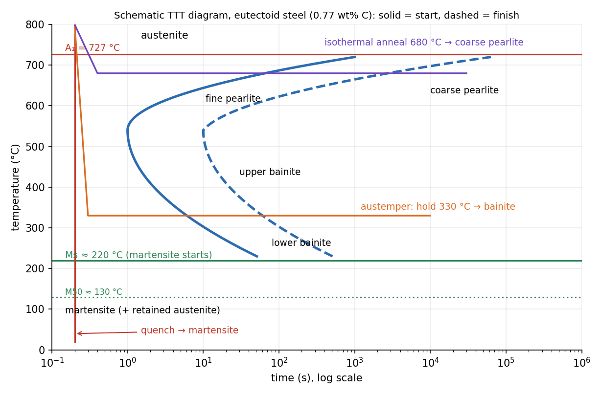

Heat Treatment of Steel — TTT and CCT Diagrams
The Fe–Fe₃C diagram says what is stable; how fast you cool decides what you get. A TTT (time–temperature–transformation) diagram shows, for austenite held at a fixed temperature, when it starts and finishes transforming. Fast enough cooling misses the pearlite and bainite and ends in martensite: the hardest, most brittle structure, which tempering then toughens.
Part of Materials and Design - MOC. Previous: Phase Diagrams - Lever Rule and the Iron-Carbide Diagram.
1. Why a diagram with time
Pearlite and bainite form by diffusion of carbon, which takes time and is faster when hot. So the transformation rate has two opposing effects: just below there is little driving force (slow start); at low temperature diffusion is too slow. The result is a C-shaped curve with a fastest "nose" near 540 °C for a eutectoid steel.

Schematic TTT diagram for a eutectoid steel (0.77 wt% C): the solid line starts, the dashed line finishes the isothermal transformation. Below the line labelled the austenite transforms without diffusion to martensite.
2. Products of austenite
| Structure | Formed | Microstructure | Hardness (eutectoid steel) |
|---|---|---|---|
| Coarse pearlite | 650–727 °C | thick ferrite and cementite lamellae | about 15 HRC |
| Fine pearlite | 550–650 °C | thinner lamellae | about 30–40 HRC |
| Upper bainite | 400–550 °C | feathery ferrite plates with cementite between | 40–45 HRC |
| Lower bainite | 250–400 °C | fine plates with carbide inside | 45–55 HRC |
| Martensite | below °C, rapid quench | BCT, supersaturated carbon, plate/lath | 60–65 HRC, brittle |
| Spheroidite | prolonged hold near 700 °C | cementite spheres in ferrite | soft, easily machined |
Martensite forms with no diffusion by a shear lattice change from FCC to body-centred tetragonal (BCT), trapping all the carbon. It starts at and continues as the temperature falls ( near 130 °C, finish near 50 °C): at room temperature some retained austenite may remain. Its hardness rises with carbon: the carbon strains the lattice, and the high dislocation density from the shear blocks slip (Dislocations, Slip and Strengthening). Pearlite gets stronger as the lamellae get finer, a Hall–Petch effect on the lamellar spacing.
3. Cooling paths and treatments
| Treatment | What you do | Result |
|---|---|---|
| Full annealing | heat 30–50 °C above (hypo) or (hyper), furnace cool | coarse pearlite: soft, ductile, stress-free |
| Normalising | heat 55–85 °C above or , air cool | finer pearlite: stronger than annealed, uniform |
| Spheroidising | hold just below for many hours | spheroidite: maximum softness for high-carbon steel |
| Isothermal anneal | quench to 680 °C, hold | coarse pearlite in a controlled time |
| Quenching | austenitise, cool faster than the critical rate | martensite (hard, brittle, internal stress, risk of cracks) |
| Tempering | reheat martensite to 150–650 °C | tempered martensite: carbon precipitates as fine carbide; hardness falls and toughness rises |
| Austempering | quench to a bainite temperature (e.g. 330 °C), hold | bainite: tough and hard, little distortion |
| Martempering | quench just above , equalise temperature, then cool | martensite with less stress |
Tempering trade-off: as the temperature rises from 200 to 600 °C the hardness falls from about 60 HRC to about 30 HRC while the toughness (impact energy) rises. Spring steels are tempered around 400 °C, tools around 200 °C, shafts and gears around 500 °C.
4. Continuous cooling (CCT) and hardenability
Real parts cool continuously, not isothermally. The CCT diagram has the same nose shifted to longer times and lower temperatures. A cooling curve that stays to the left of the nose gives martensite; one that crosses it gives pearlite or bainite. The slowest cooling that still gives full martensite is the critical cooling rate.
Hardenability is the depth to which a steel can be hardened. It depends on how far the nose is to the right: alloying elements (Cr, Mo, Mn, Ni) move the nose rightward, so thick sections can be hardened with a gentler quench (oil instead of water, less cracking). Carbon raises the maximum hardness; alloying raises the depth. Plain carbon steels are shallow-hardening; their centre cools too slowly in a thick section. The Jominy end-quench test measures this.
5. Worked reading of the diagram
A 0.77 % C steel austenitised and then:
- Quenched in water to room temperature: the path stays left of the nose; austenite becomes martensite at °C. Hard (≈ 65 HRC), brittle. Temper it.
- Quenched to 330 °C and held 1000 s: the path crosses the bainite start line and finishes by the dashed line: bainite.
- Quenched to 680 °C and held: passes through the high-temperature end of the nose: coarse pearlite after hours.
- Furnace-cooled: crosses the diagram near slowly: coarse pearlite, the softest.
- Using a TTT diagram for a continuously cooled part: transformation starts at lower temperature and later time than the isothermal curve indicates.
- Confusing tempering with annealing: tempering is applied to martensite at a low temperature, annealing to austenitised steel with slow cooling.
- Assuming the hardest steel is the best: untempered martensite is too brittle for most uses.
- Treating as dependent on cooling rate: it depends on composition (more carbon lowers ).
- Forgetting retained austenite at high carbon contents (a subzero treatment can convert it).
Predict first: two steels of the same carbon content, one plain and one with 1 % Cr and 0.2 % Mo. Which hardens deeper?
The alloy steel: Cr and Mo delay pearlite and bainite formation (the nose moves right), so it forms martensite at slower cooling rates and therefore deeper below the surface. At the same carbon the maximum surface hardness is the same.
Why does a quenched steel need to be tempered immediately?
Martensite is highly stressed and brittle; thermal and transformation stresses can crack it within hours. Tempering relieves stress and trades some hardness for large gains in toughness.
6. Connections
- Phase Diagrams - Lever Rule and the Iron-Carbide Diagram — the equilibrium structures that these treatments bypass.
- Dislocations, Slip and Strengthening — the strengthening mechanisms of martensite and fine pearlite.
- Tensile Test, True Stress-Strain and Hardness — hardness as a quick measure of the structure; .
- Exponential Decay - Time Constants, Damping and Spatial Relaxation — transformation kinetics follow the Avrami form , a stretched exponential in time.
- Thermal Stresses — quench cracking: surface and core cool at different rates, the same thermal stress that this note's martensite transformation adds to.
- Manufacturing Technology - MOC — heat treatment is a manufacturing step after forming and machining.